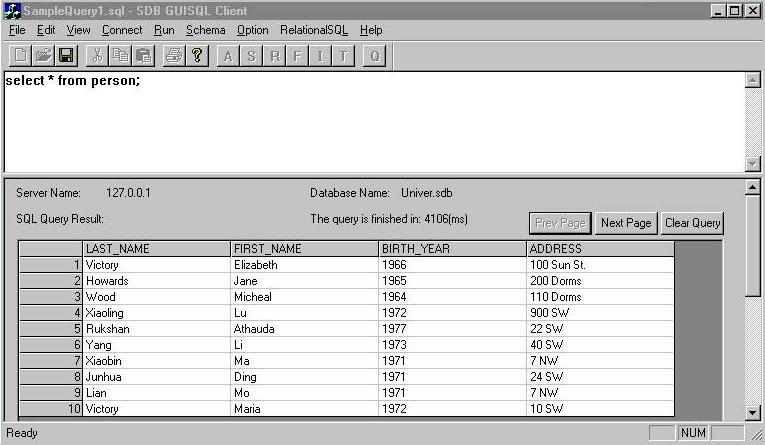

We can pose queries against the previous semantic
schema using Semantic Wrapper. Our first example query is "select
all the information about persons in the database". The following window
is the client application which receives user input and sends it to Semantic
Wrapper, which then processes the semantic query and translates it into
an equivalent traditional SQL query.
